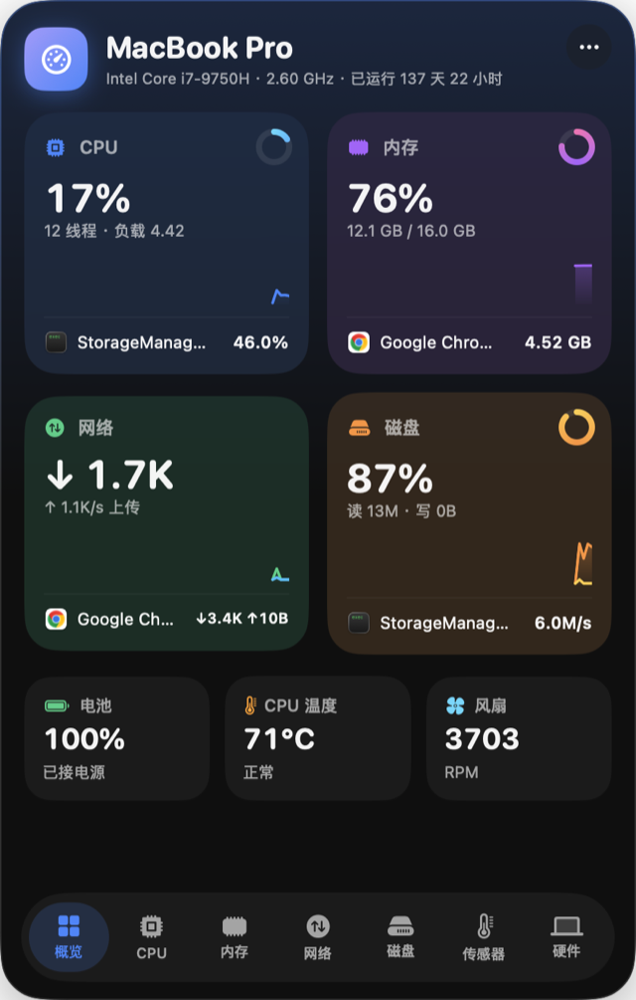
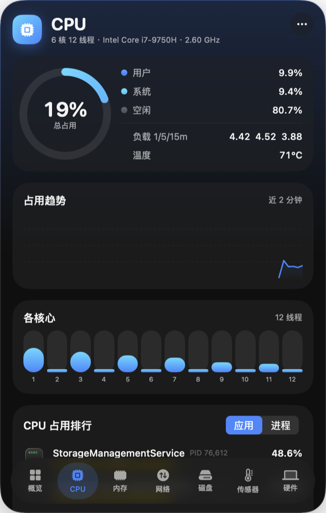
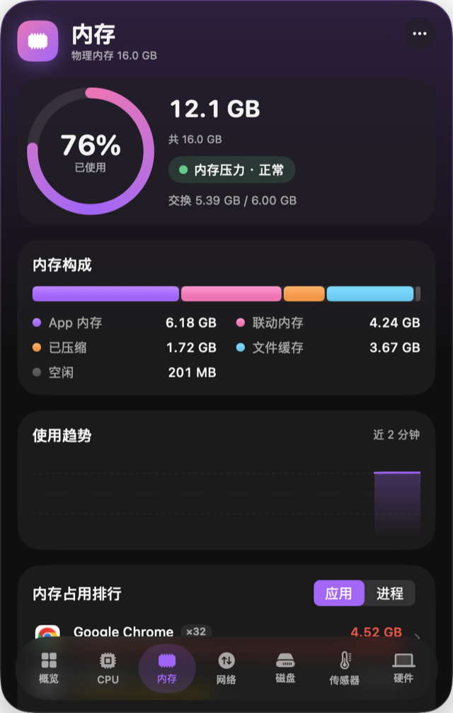
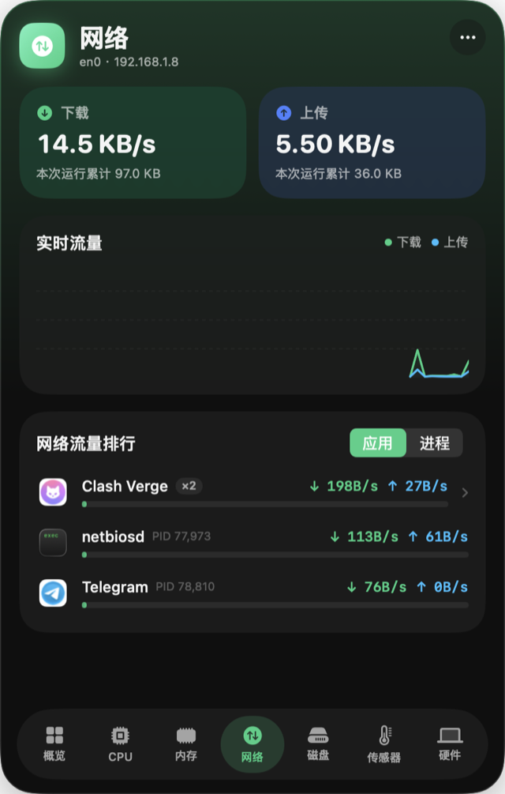
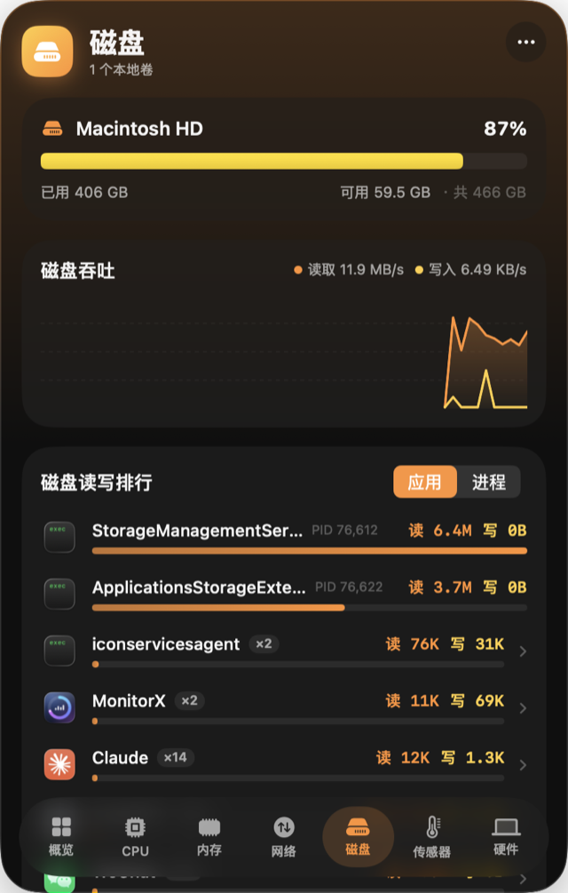
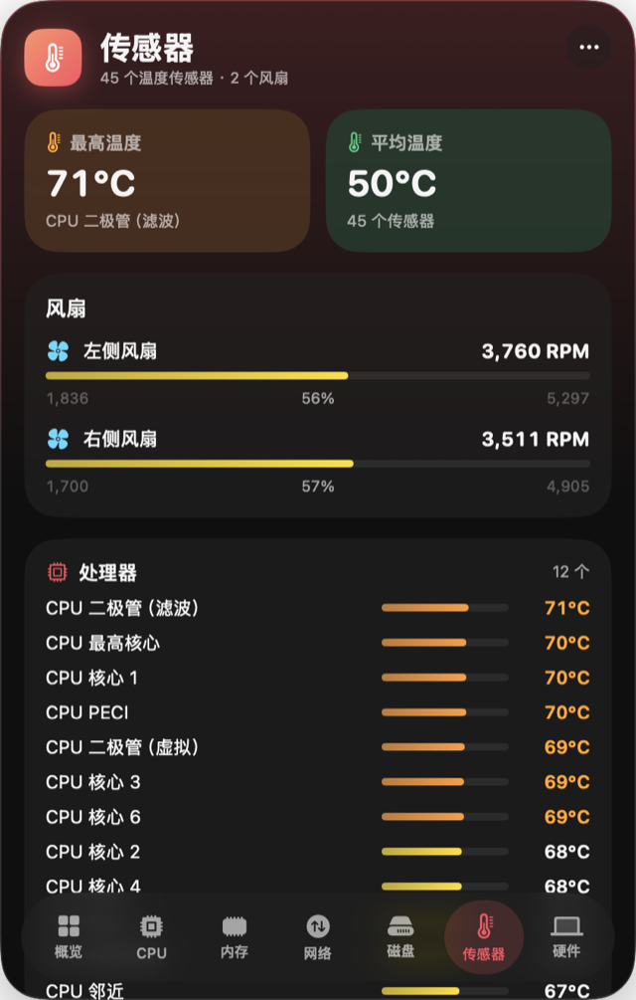
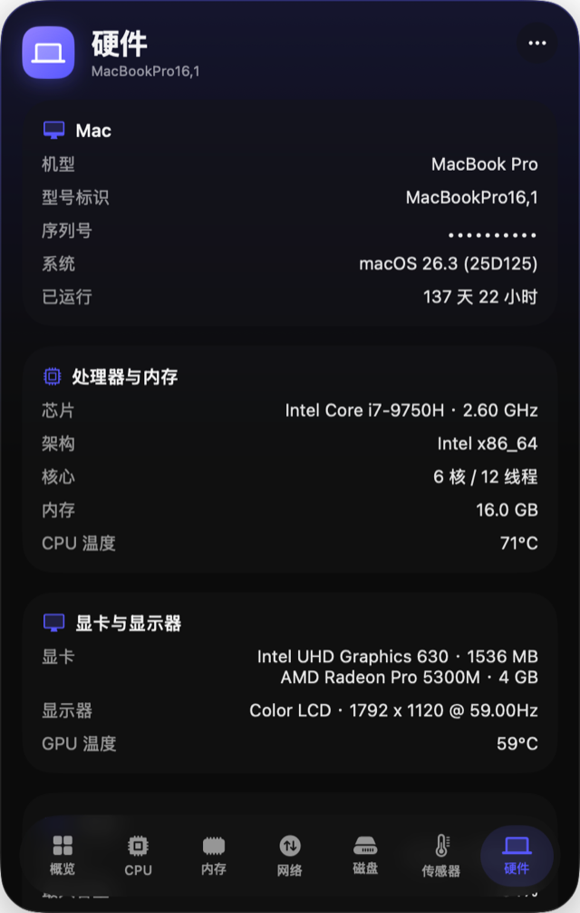

谁在占用你的 Mac，
一眼就知道。
MonitorX 常驻菜单栏，把 CPU、内存、网络、磁盘按应用排好队。Chrome 的几十个 Helper 进程合成一行，点开再看每个进程。
| 应用 | 进程数 | CPU 占用 |
|---|
演示数据，仅用于展示排序与着色。真实界面见下方截图。
CPU：总量看趋势，核心看分布
用户、系统、空闲拆开显示，1、5、15 分钟负载一并给出。某个核心被单线程任务顶满，一眼就能从柱图里看到。
内存：先看压力，再看构成
口径与活动监视器一致：App、联动、压缩、缓存、空闲。压力变黄变红才需要动手，缓存占满不是问题。
网络：谁在下载，谁在上传
按应用汇总上下行速度。本机回环流量不计入，所以经本机代理转发的流量只算在代理软件上，不会被算两遍。
磁盘：快满了会变红
每个卷一条容量，读写吞吐另画曲线。剩余空间不足时条会先变黄再变红，提醒你在系统开始卡顿之前清理。
传感器：全部温度点，一张热力图
枚举 SMC 里所有温度传感器，按处理器、显卡、电池、存储等分组，风扇转速与范围一并显示。此页仅官网版提供，沙盒不允许访问 SMC。
真实界面
以下截图来自真实运行的 App。面板背景是 Liquid Glass，会随桌面壁纸透出，这里放在一张壁纸上，更接近它在你桌面上的样子。







两个版本
App Store 强制沙盒，沙盒禁止读取其他进程和访问 SMC，所以能力不同。
| 功能 | 官网版 | App Store 版 |
|---|---|---|
| CPU、内存、网络、磁盘 | 有 | 有 |
| 电池与硬件信息 | 有 | 有 |
| 按应用与进程的占用排行 | 有 | 无 |
| 传感器页（温度、风扇） | 有 | 无 |
下载 MonitorX
需要 macOS 26 或更高版本，Intel 与 Apple Silicon 通用。面板关闭时约占 1% 单核、27 MB 内存。
- 打开 dmg，把 MonitorX 拖进「应用程序」。
- 首次打开若提示无法验证开发者，在终端执行下面的命令，或右键选择「打开」。
xattr -cr /Applications/MonitorX.app - 菜单栏出现 CPU、内存和网速。左键展开面板，右键退出。
常见问题
为什么提示无法验证开发者？
当前安装包没有经过 Apple 公证。执行上面的 xattr -cr 命令或右键打开即可。
它会联网或上传数据吗？
不会。所有数据都在本机采集，应用不发起任何网络请求。
需要哪些权限？
不需要辅助功能、屏幕录制或完全磁盘访问。读取温度与风扇走系统的 SMC 接口，读取进程信息用系统自带的接口和命令行工具。
支持 Apple Silicon 吗？
支持，安装包是 x86_64 加 arm64 的通用二进制。Apple Silicon 的温度传感器键名与 Intel 不同，部分机型可能读不全，目前只在 Intel MacBook Pro 上实测过。